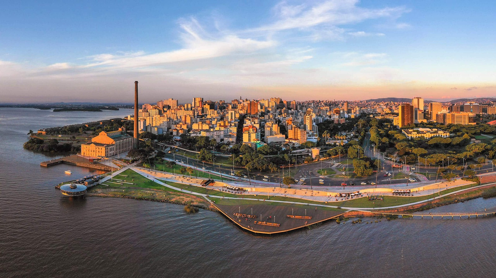

100% Personalizado
Diga o que gosta (gastronomia, música, orçamento) e nós montamos o roteiro perfeito.


O Explora POA nasceu da paixão pela nossa cidade e do desejo de tornar Porto Alegre acessível, encantadora e acolhedora para todos. O nosso aplicativo é mais do que um mapa; é o seu guia de bolso personalizado, unindo tecnologia de ponta, curadoria local feita por quem mora aqui e foco total em acessibilidade (física e cognitiva).
Democratizar o turismo em Porto Alegre, oferecendo roteiros autênticos que respeitem a individualidade e as necessidades de cada pessoa.
Ser a principal plataforma de turismo acessível e personalizado do Sul do Brasil até 2028.
Inclusão, Autenticidade, Inovação, Empatia e muito amor por Porto Alegre.
Uma capital vibrante, cheia de contrastes e histórias. Do tradicional churrasco e chimarrão nas praças aos cafés e polos de inovação modernos. Do pôr do sol inesquecível na Orla do Guaíba à efervescência cultural da Cidade Baixa e dos nossos museus. Com o Explora POA, você vivencia a cidade não apenas como um turista, mas como um verdadeiro morador (um "local"). Deixe o Beto te guiar pelos melhores cantos!


Diga o que gosta (gastronomia, música, orçamento) e nós montamos o roteiro perfeito.
Locais validados para garantir autonomia e conforto para todos os perfis de utilizadores.
O Beto acompanha-o com dicas autênticas que só quem mora em Porto Alegre conhece.
Dúvidas ou sugestões? Envie uma mensagem!
Faça parte do roteiro de quem visita a cidade.
Tem um restaurante, museu ou atração turística? Queremos avaliar a acessibilidade do seu espaço e incluí-lo em nossos roteiros. Fale conosco para saber como!
Porto Alegre, RS
Atuando em toda a Região Metropolitana